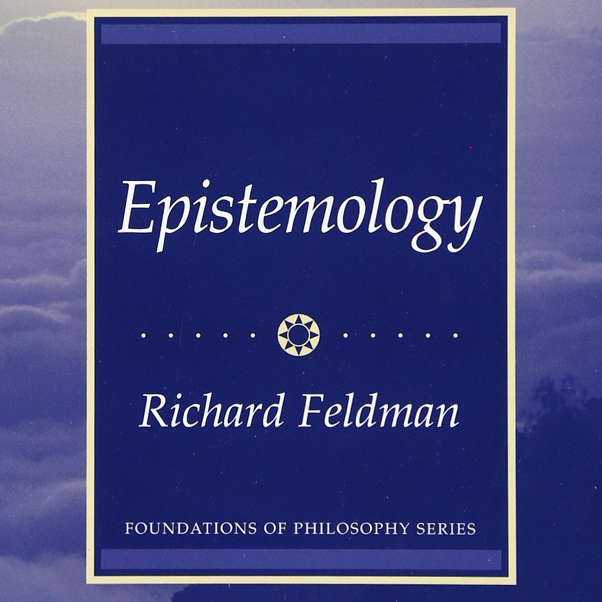

Chapter 4: Evidentialist Theories of Knowledge and Justification
Thu., Feb 7
In this class, we begin discussing Chapter 4 of the Feldman textbook. In the introduction, Feldman zeroes in on the notion of justification and its supervenience on nonepistemic properties. §I introduces evidentialism (originally in W. K. Clifford’s formulation) and shows how it can overcome objections by distinguishing between action and belief, moral and epistemic wrongness, and the question of belief given evidence and the question of whether to gain more evidence. §II explains how different evidentialist theories emerge from consideration of the Infinite Regress Argument. §III presents Cartesian Foundationalism and shows the difficulties it is subject to. §IV presents Coherentism and shows the difficulties it is subject to—mainly its neglect of the epistemic importance of experience. Finally, §V presents so-called “Modest Foundationalism” and shows how it can overcome objections while still needing further development.
Key Concepts: Evidentialism, Regress, Foundationalism, Coherentism
Readings:
Feldman textbook
Ch. 4 (required)
Other Resources:
Stanford Encyclopedia of Philosophy
Internet Encyclopedia of Philosophy